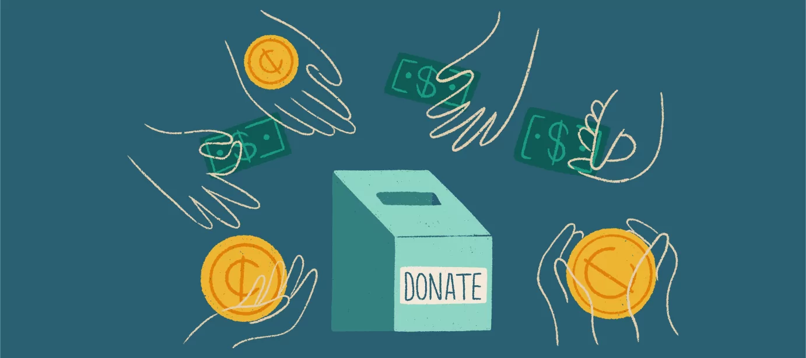
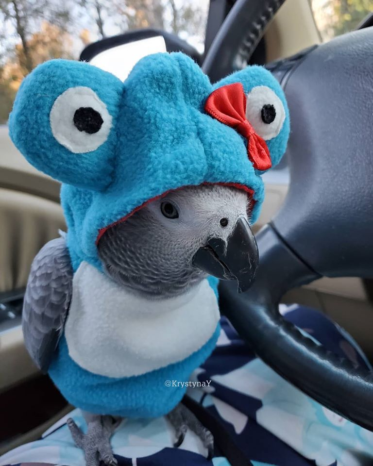

SAKADAB
Health
Health Decide Model

Define the problem:
The SAKADAB institution is experiencing financial issues leading to unmet needs. Their lack of income has led them to experience a financial crisis, thus the community cannot buy their basic and medical needs. If this problem continues for a long time, then it will result in the community living in a poor state.
Establish the Criteria:
The criteria that would be favorable for the SAKADAB community once they are given financial support from donors or people from outside their community is being able to spread awareness to the public. For other people to be more conscious of the struggles of PWDs, especially during the years of the COVID-19 lockdowns.
It would be an essential step to have the public be more aware of how much being disabled can negatively affect one's life, how things that would seem easy for someone to do but would seem too difficult for someone who is disabled, and with the understanding of this can help people be more eager to help those who are in need of assistance.
Conside All the Alternatives:
The SAKADAB can use different social media platforms to spread awareness about its problems. False information is not always tightly regulated on social media, so it can be easily and widely available to anyone. Having trustworthy/trusted assets makes you a more knowledgeable writer, so comparing assets significantly is important.
Identify the Best Alternative:
We see it fit that the best alternative would be to promote this fundraiser project within the current trending platforms (TikTok, Facebook, Instagram) rather than creating a website of its own. A larger audience would mean a higher chance of acquiring people who will be willing to help our donation program project.
Plan of Action:
We decided to use our knowledge to help our partner institution by creating websites that provide all the necessary information about SAKADAB, posters, and a fundraising program that will be posted to educate people about PWDs. Through our social media and website, we will advertise SAKADAB's products in order to gain potential customers and an easy way to encourage people to donate, both of which can help to improve their community. To promote the community, we will use apps such as Facebook, Instagram, and Tiktok, where we will post more about the community in order to gain people's interest and encourage them to help and support the SAKADAB community.
Possible Problem and Solution:
When dealing with a fundraiser project the most common problem this can have would be not being able to get the message out to the public enough, meaning that the promotion of the project was not good enough. The only way to avoid this is to properly study how we can promote this project in a way that catches the public's attention.
Conside All the Alternatives:
The SAKADAB can use different social media platforms to spread awareness about its problems. False information is not always tightly regulated on social media, so it can be easily and widely available to anyone. Having trustworthy/trusted assets makes you a more knowledgeable writer, so comparing assets significantly is important.
Identify the Best Alternative:
We see it fit that the best alternative would be to promote this fundraiser project within the current trending platforms (TikTok, Facebook, Instagram) rather than creating a website of its own. A larger audience would mean a higher chance of acquiring people who will be willing to help our donation program project.
Plan of Action:
We decided to use our knowledge to help our partner institution by creating websites that provide all the necessary information about SAKADAB, posters, and a fundraising program that will be posted to educate people about PWDs. Through our social media and website, we will advertise SAKADAB's products in order to gain potential customers and an easy way to encourage people to donate, both of which can help to improve their community. To promote the community, we will use apps such as Facebook, Instagram, and Tiktok, where we will post more about the community in order to gain people's interest and encourage them to help and support the SAKADAB community.
Possible Problem and Solution:
When dealing with a fundraiser project the most common problem this can have would be not being able to get the message out to the public enough, meaning that the promotion of the project was not good enough. The only way to avoid this is to properly study how we can promote this project in a way that catches the public's attention.
Plan of Action:
We decided to use our knowledge to help our partner institution by creating websites that provide all the necessary information about SAKADAB, posters, and a fundraising program that will be posted to educate people about PWDs. Through our social media and website, we will advertise SAKADAB's products in order to gain potential customers and an easy way to encourage people to donate, both of which can help to improve their community. To promote the community, we will use apps such as Facebook, Instagram, and Tiktok, where we will post more about the community in order to gain people's interest and encourage them to help and support the SAKADAB community.
Possible Problem and Solution:
When dealing with a fundraiser project the most common problem this can have would be not being able to get the message out to the public enough, meaning that the promotion of the project was not good enough. The only way to avoid this is to properly study how we can promote this project in a way that catches the public's attention.

Webdesigner
His name is Axel Ken Montano he is a member of Group 4B has been a student in Ateneo De Davao University since 2016 a Track n Field Varsity player since 2019, you can call him Peter short for Jericho and his favorite color is red like his favorite fruit bananas. He likes to play video games, sleep, hangout with his friends, and tries to try anything (food, sports, clothes, etc.)to see if he likes it he likes to push himself to the limits and likes the adrenaline, he has goals of being very successful in anything he does in life. Which can somehow relate to this project, since it could mean that he would try harder in succeeding in the current project for SAKADAB.
